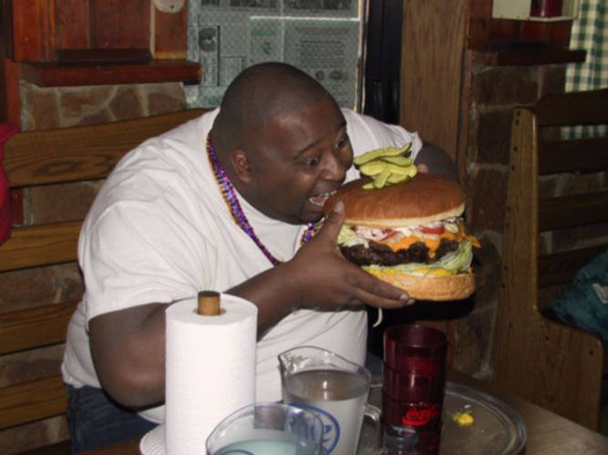
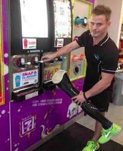

About
My name is Andrew Rendon, and I am a Sophomore at El Camino High School, and I like Slurpees.
I usually spend my spare time playing video games, playing with my pets, siblings, or reading.
Favorite foods:
- Mcdonalds Sprite: It has the perfect balance of carbonation and flavor, and is tasty and refreshing.

- In-N-Out: My favorite burger place, I go here once in a while with my family and it never disappoints.

- 7-11 Slurpee:Super cheap, delicious and satisfies my craving for Red 40.

Favorite Hobbies:
- Playing Video Games: A fun way to connect with my friends and unwind after school, as well as the thing I look forwards to every day..

- Playing the Tenor Sax: Music makes my world go round, and being able to play some is something I love. I used to play alto but I got switched to tenor, but I still like it.

- Spending time with my family: I love spending time with my family, because eventually I'll have to move out, and I won't be able to have moments like that as often.

Favorite Books/Movies:
Avengers Endgame: First time watching this in theaters was an experience, and i'll never forget how epic it was.
 Scary Movie: Very stupid movie that makes me laugh, insane plot twist at the end, and* watched with family so it was even better. One of the founding fathers of the mostly now-dead spoof movies.
Scary Movie: Very stupid movie that makes me laugh, insane plot twist at the end, and* watched with family so it was even better. One of the founding fathers of the mostly now-dead spoof movies.
 Ready Player One: This movie has the best crossovers, and a beautiful story.
Ready Player One: This movie has the best crossovers, and a beautiful story.